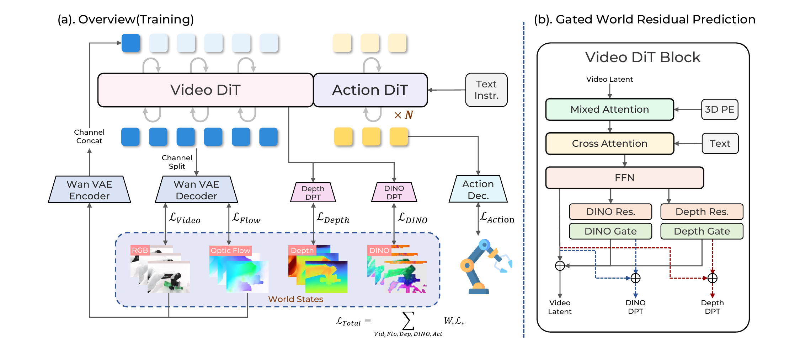

Provides future appearance and scene-evolution cues.
World Action Models
DreamWAM
Beyond RGB Future Prediction for World Action Models
DreamWAM learns future appearance, motion, geometry, and semantics during training while preserving RGB-only action inference.
98.90%LIBERO Average
75.47%LIBERO-Plus Average
74.40%Real Robot Average under perturbations
01 / Abstract
Future prediction should preserve what matters for action.
World Action Models (WAMs) learn action-relevant representations by predicting how the observed world will evolve. Most existing WAMs define this future in RGB space, where task-relevant state transitions are entangled with nuisance variations in texture, illumination, background, and viewpoint. We argue that WAMs should explicitly predict action-relevant future state rather than relying on RGB prediction alone.
We introduce DreamWAM, which reformulates future prediction as structured world modeling beyond RGB, representing future states through complementary views of appearance, motion, geometry, and semantics. During training, DreamWAM combines joint latent denoising of RGB and motion with lightweight gated residual branches for geometry and semantics. Shared attention between VideoDiT and ActionDiT allows the action branch to learn from these future-state predictions, while all beyond-RGB supervision branches are disabled at inference and deployment remains RGB-only.
Across no-rollout and joint video-action inference, DreamWAM improves matched RGB-only baselines on LIBERO from 97.30% to 98.40% and from 98.00% to 98.90%. Under unseen LIBERO-Plus perturbations, performance rises from 51.36% to 63.44% and from 69.16% to 75.47%. The same robustness extends to real-world manipulation, where DreamWAM reaches 74.40% across unseen lighting, background, and object-layout changes, compared with 55.6% for Fast-WAM-Joint.
02 / Method
Structured future views shape a shared world-action representation.
RGB and Flow are jointly denoised by VideoDiT. DINO and Depth provide gated residual corrections between selected VideoDiT blocks. Video and action tokens exchange information through shared attention.

Provides motion and temporal-change cues.
Provides geometric and spatial-structure cues.
Provides semantic and object-level cues.
TrainingRGB + Flow + Depth + DINO
>
DeployRGB observation to action
03 / Simulation
Performance gains in-domain.
Larger gains under visual perturbations.
Matched joint video-action comparisons use the same backbone, training data, and evaluation protocol. DreamWAM improves the average on both LIBERO and LIBERO-Plus.
| Method | Spatial | Object | Goal | Long | Average |
|---|---|---|---|---|---|
| Fast-WAM-Joint | 99.40 | 98.20 | 98.80 | 95.60 | 98.00 |
| DreamWAM | 99.60 | 99.80 | 98.60 | 97.60 | 98.90 |
| Method | Camera | Robot | Language | Light | Background | Noise | Layout | Average |
|---|---|---|---|---|---|---|---|---|
| Fast-WAM-Joint | 39.59 | 60.90 | 92.32 | 94.57 | 57.62 | 58.59 | 80.52 | 69.16 |
| DreamWAM | 53.78 | 63.61 | 94.80 | 96.67 | 71.56 | 67.15 | 80.72 | 75.47 |
Both tables report two-seed joint video-action inference. LIBERO uses 2,000 rollouts per seed; LIBERO-Plus uses 10,030 episodes per seed and no LIBERO-Plus training data.
04 / Real Robot
Robustness gains transfer from simulation to hardware.
Four standard tabletop tasks and three unseen visual shifts are evaluated with 30 trials per setting. The perturbation tasks retain the same instruction and success criterion.
Standard-task average
90.8%96.7%
Visual-shift average
55.6%74.40%
| Method | Dish stack | Dual-object | Strawberries | Block stack | Average |
|---|---|---|---|---|---|
| Fast-WAM-Joint | 96.7 | 86.7 | 86.7 | 93.3 | 90.8 |
| DreamWAM | 100.0 | 96.7 | 96.7 | 93.3 | 96.7 |
| Method | Light | Background | Distractors | Average |
|---|---|---|---|---|
| Fast-WAM-Joint | 60.0 | 56.7 | 50.0 | 55.6 |
| DreamWAM | 76.7 | 76.7 | 70.0 | 74.40 |
Representative rollouts
Real-robot task comparisons
Fast-WAM-Joint and DreamWAM performing the same manipulation task.
01 / 04